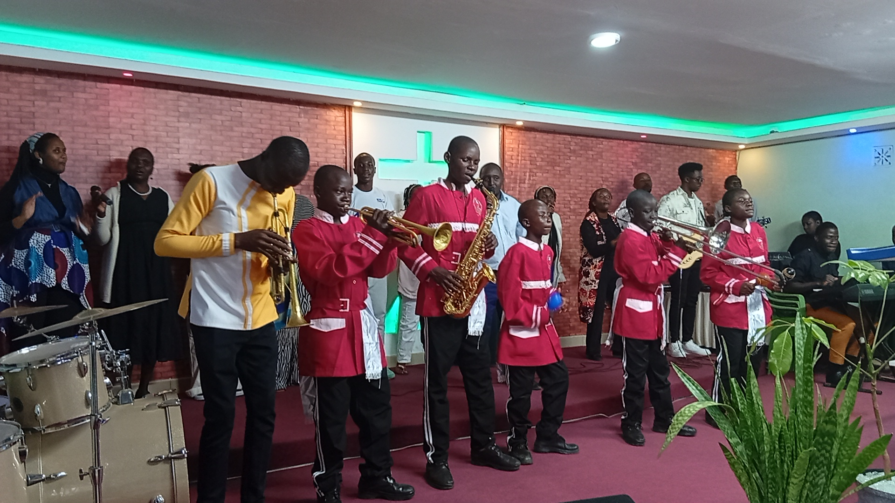

💙
Child Sponsorship
Through our partnership with Compassion Kenya, sponsoring a child provides them with holistic medical care, nutrition, spiritual guidance, and tuition support.
Learn about sponsorship →Discover how you can walk alongside ACK Budokomi Church and Compassion Kenya to change a child's life forever.
Whether you choose to give your time, resources, or talents, you are playing a vital role in releasing children from poverty in Jesus' name.
Through our partnership with Compassion Kenya, sponsoring a child provides them with holistic medical care, nutrition, spiritual guidance, and tuition support.
Learn about sponsorship →Share your skills with our beneficiaries. We are always looking for mentors to assist with academic tutoring, life skills training, or sports coordination.
Apply to volunteer →Support our specialized programs directly. We gladly accept donations of musical instruments for our music program, storybooks, and sports gear.
Inquire about items →Prayer is the backbone of our ministry. Join us in praying regularly for the protection of our children, the wisdom of our leaders, and the growth of Budokomi.
Our music and band programs teach our beneficiaries deep coordination, focus, and teamwork. However, keeping instruments maintained and adding new learning slots requires active communal partnership.
If you are an experienced musician or wish to gift or fund instruments to help scale our music training classes, your investment will directly shape tomorrow's worship leaders.
